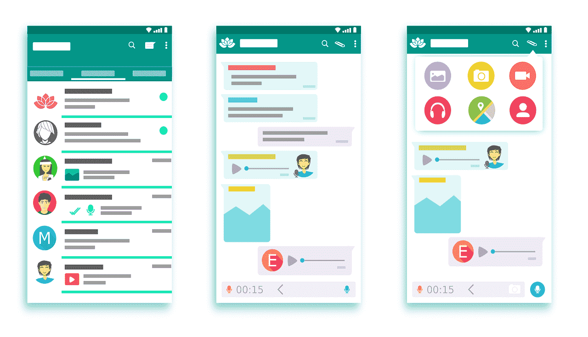
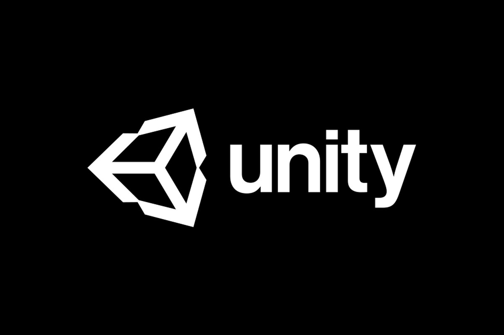
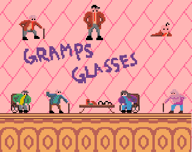
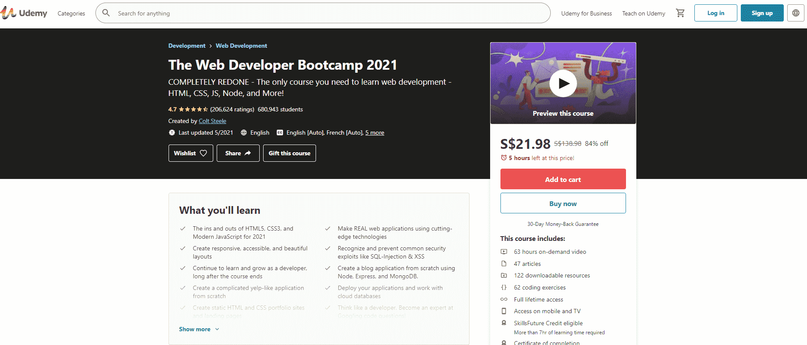

Python
One of the most popular coding languages in the world is Python! I’m sure everyone has heard of this language and have heard of its wondrous simplicity.
WHY
The sheer simplicity of Python is the main reason why I believe it is a very apt language for complete beginners of programming to learn. Python is a language that is built to very similarly resemble the English language and that is exactly why it is so seamless to pick up.
However, Python’s simplicity does not take anything away from its functionality. Furthermore, Python is a language that is driven by Object-Oriented Programming (OOP), a very essential concept beginner programmers should be familiar with. Learning OOP from Python will allow you to apply the same principles in more advanced languages as well.
WHAT
From Triple-A game development like ‘Battlefield 2’ to fully functional applications like Instagram, Python is used widely around the world for many professional softwares. The use of Python can be found in many big companies and the notion that Python as a language is for beginners is simply not true.
HOW
How I would go about learning Python is to first learn the basics of the language. Codeacademy/Youtube has amazing courses for you to really pick up python and the great part is they cost absolutely zero dollars! After getting the basics right, try building your own projects like developing games with the Pygame package!
Python is also a very popular language used for data collection and analysis. In future articles, I will be writing about how python can be used for webscraping and webcrawling (basically collecting information from websites), so that’s something you can be excited for! Learn Python as a simple gateway into the world of programming!
Java
Next up we have Java. Java is a great language to learn as your first programming language. Java is another very dynamic and widely-used language. Java is a language that is very commonly used in professional, large teams and thus learning it as your first language may be something very useful to you in the future.
WHY
Firstly, Java’s syntax is also very systematic and very similar to many other programming languages out there, much more so than python. This can be a great gateway into other programming languages by ingraining basic programming syntax in your code so that you won’t make simple mistakes when programming in the future.
Furthermore, Java has very simple and clear syntax as well. Most things are also very well-defined in online forums and the java documentation as well, so you know where to go if you are faced with any issues.
WHAT
Basically every android application can be made using Java and android studio, which shows the versatility of Java as a programming language. Apart from android apps, Java is used in many big data software as well.
The ubiquity of java can be proven by its sheer usage worldwide. In fact, Java has been the most used programming language in the world since 2004 till it was recently overtaken by Python in 2021!
 You will find more infographics at Statista
You will find more infographics at Statista
Regardless, I believe Java is a great first language to learn because of what it's generally used for...
HOW
How I would go about learning Java is to enrol in an android studio course. Of course if you want to learn only java the language itself, codeacademy or youtube (or programming blogs) may be the better option, but I feel learning java in the hopes of making your own personal android studio application is way more fascinating.
Personally, I picked up java because I wanted to try developing apps on android studio. Java and Kotlin are the two main languages used in Android Studio, and personally I feel Kotlin is a little too intense for a complete beginner to learn. Conversely, java is simple to pick up and great to learn if you want to eventually develop your own android apps on android studio!

Imagine creating your own app... That would be an amazing feeling huh?
Of course, learning the android studio system itself will also take some time, but I believe it is well worth it. Strive to master java by filling your own personal portfolio with android applications!
C#
Similar to Java, C# is another very systematic language. It is also relatively simple compared to some of its other “C” cousins.
WHY
Being very defined, learning and mastering C# will give you a very good perspective of how programming languages work and how you should write your code in the future.
I believe C# and Java are very similar languages, with many similarities in the way the code is written. The clear structure of C# should help beginner programmers learn C# much better with no room for ambiguity.
WHAT
Again, C# is very versatile as a language. From web applications to game development, the use of C# can be found in many companies world-wide. One very popular use of C# is the Unity Game Engine.

Unity Game Engine is a professional platform that even you as a beginner can use to develop games, and it's FREE!
HOW
How I would go about learning C# is to learn the Unity Game Engine. The Unity Game Engine itself has a plethora of educational resources published by Unity themselves so learning the engine should be a very smooth journey. Furthermore, there are many well-made Udemy courses on C# and Unity that I thoroughly enjoyed back when I was a beginner in both topics.
Personally, I learned C# because I was interested in game development, specifically using the Unity Game Engine. Having been a part of it, I can honestly say that the game development community is truly a very welcoming and friendly one. Joining community hosted game jams were some of my favourite memories about programming in C# and using the Unity Engine! You can play the game i developed in this link.

This was the game I developed for the Brackey's Game Jam 2020.2 that I thoroughly enjoyed!
For those that are unfamiliar, a game jam is basically a mini-contest where game developers across the globe submit their own games that they developed over the span of a pre-defined time limit and also following a common theme! I remember the feeling of pure accomplishment when I submitted my entry during my first game jam, and receiving my first review! Learn C# if you have a deep interest in the world of game development and want to learn a very well-defined language!
C
The reason I think C is a good language to learn as a beginner is pretty different from the other languages. C itself is not easy to learn, but it is one of the most archaic languages in the world and because of that, its syntax is very complicated. However, the benefit of learning C is that it helps you appreciate how a computer thinks.
WHY
The only level below C is the CPU’s assembly code (Basically Binary, 0s and 1s!), which means you as the programmer have to do a lot of the heavy lifting yourself.
Using C will allow you to have a very thorough understanding of the world of programming and truly be a programmer that understands what’s happening at every step of the way. After using C, you will also recognise how much less work you have to do when using higher level languages.
WHAT
Nowadays, C is used for developing many operating system applications. Many code interpreters are also developed in C. Many database management systems are also written in C. Our operating systems (Windows, MacOS, Linux) are also written in C, which shows just how powerful the language of C is.
Windows, Linux, Mac OS are all operating systems built in C!
HOW
How I would go about learning C is to take a course on Computer Science. I took the Harvard CS50 course online which has been generously offered for free by Harvard themselves.
Not only will you learn the basic concepts of programming, the course also enlightens students on how computers work (binary code) and familiarises students with the syntax of C by making them work on coding assignments! I truly believe this is a wonderful course to take if you are interested in computing and the realm of computer science!
Personally, I learned C because I was interested in computer science. I genuinely believe to have a good understanding of computing and programming, learning C is crucial. The fact that writing programs in C require a lot more work than higher level languages can be frustrating, but it also means you will learn a lot more than if you were to use another language. Learning the history of C and how it was developed is also extremely interesting for any would-be computer scientist!
HTML, CSS, JavaScript
Lastly, we have HTML, CSS and JavaScript. Now you may be wondering why i have put three different languages into one section, but the answer is very clear. These three languages are used hand-in-hand (-in-hand) to develop fully functioning websites!
To give a quick rundown, HTML is basically used to define the layout of our websites (Where should the header be placed, where does this button go etc.). CSS is used to style our websites (What colour should this button be, What font should I use for this paragraph etc.). Lastly, Javascript is used for the functionality of our websites (What should happen if I scroll to this point in the page, What should happen when I click this button etc.)
WHY
Many more experienced programmers may also be wondering why I believe these 3 languages are good to learn as the “first” language for any beginner programmer. HTML and CSS in particular have been widely shunned by programmers as not even being a programming language at all.
I agree that HTML and CSS is completely different from any other programming language, but their sheer simplicity is the reason why I feel learning them is great for beginner programmers. It does not take long for a beginner programmer to learn HTML and CSS and design their own websites. This can bring about much inspiration and satisfaction!
JavaScript is slightly more difficult to learn, but implementing JavaScript into a website really isn’t very hard. I believe because it is so easy to view the changes in your code visually in web development, it is a great way for beginners to learn programming.
WHAT
These three languages are basically what drives every single website in the World Wide Web.
Learn HTML, CSS and Javascript to make your own website!
Even website builders like Wix or Wordpress is backed by HTML, CSS and JavaScript. Users use these softwares to build websites, and the softwares themselves actually write the code for the users. Basically, these services provide a visual way for people to program websites (in other words, a Graphical User Interface).
HOW
How I would go about learning these three languages is to again take a course on Web Development. I personally took a Web Development Bootcamp on Udemy which I thought was extremely informative and professional, and it really gave me the skills required to build and design my own polished websites.

This was an amazing course on Web Development! Link
here.
Furthermore, I sincerely urge every future programmer to start their own programming blog. Writing posts about programming and helping other beginner programmers is a great way to contribute to the growing programming community around the world!
Conclusion
After talking about 5 potential best ways for you to embark on your programming journey, I hope I have at least inspired one of you to take a course or watch a video on programming. I can genuinely say that programming has changed my life drastically and I really hope you take this step to learn programming for yourself.
If you were to take away anything from my article today, just know this. It really doesn’t matter that much what language you choose to learn first. TLDR: Just start learning! As long as you stay motivated and continue to learn throughout your journey as a programmer, you are sure to succeed regardless of which language you choose to learn first!
Remember to take note of all the things I wrote about in my previous article (How to learn programming from scratch) and I’m sure you will be an amazing programmer in the near future. Always remember to Stay Chill Cucumbers!